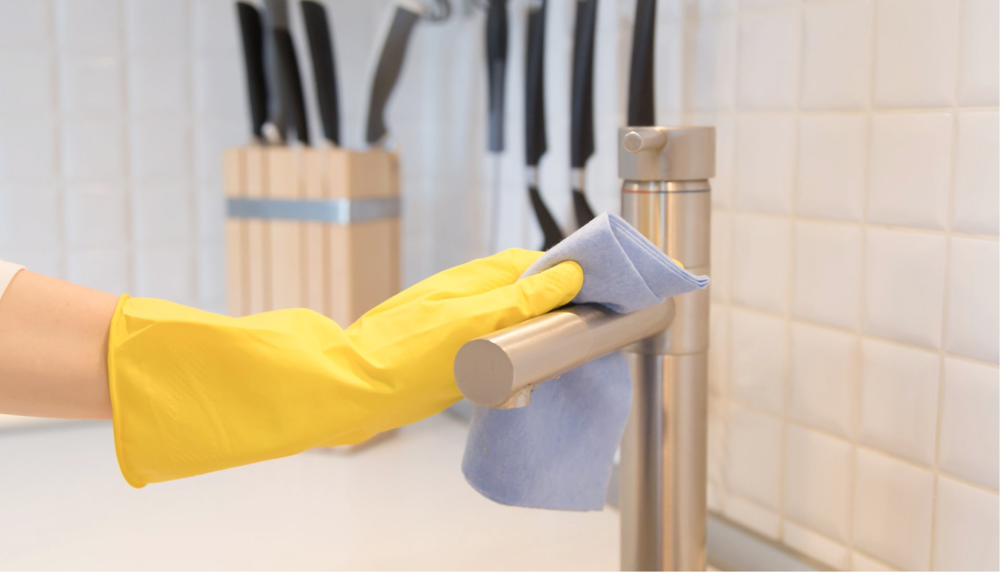

Лайфхаки
Осозанный подход к еде
Правильный выбор пищи играет важную роль в осознанном
потреблении. Это означает отдачу предпочтения продуктам,
выращенным с учетом экологических принципов, таким как
органическое земледелие и устойчивое животноводство. Также
важно выбирать местные и сезонные продукты, чтобы сократить
транспортные расходы и поддержать местных производителей.
Кроме того, уменьшение потребления мяса и переход
к растительному питанию помогает снизить влияние
на окружающую среду и приводит к более здоровому
образу жизни.
Осознанное потребление еды помогает снизить риск развития
заболеваний и сократить воздействие на окружающую среду.
В современном мире экологические проблемы становятся все
более актуальными, и мы должны прикладывать усилия для
снижения негативного воздействия на окружающую среду.
Потребление еды также является одним из аспектов, который
может внести свой вклад в экологическую устойчивость.
В этой статье мы представим несколько идей, которые
помогут вам потреблять еду осознанным и экологически чистым
способом.

 Общие рекомендации по потреблению продуктов питания
Общие рекомендации по потреблению продуктов питания
Предпочитайте упаковку из натуральных материалов.
Рассчитывайте количество еды, которое вы сможете съесть
до того, как она испортится.
Используйте продукты местного производства.
Если вам позволяет здоровье, потребляйте меньшее количество мяса
и большее количество растительной пищи.
Избегайте продуктов с высоким уровнем пестицидов
и гормонов.